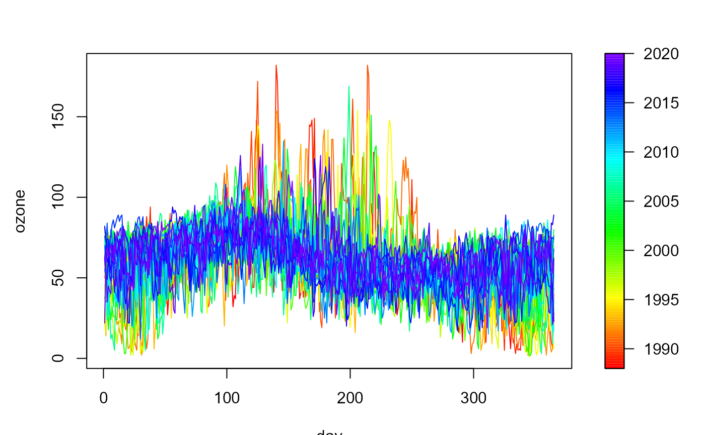

Plots a functional data object.
# S3 method for npf.data
plot(
x,
y = seq_len(x$ny),
slim = range(y, finite = TRUE),
col = rainbow(128, end = 0.75),
breaks = NULL,
legend = TRUE,
horizontal = FALSE,
legend.shrink = 1,
legend.width = 1.2,
legend.mar = ifelse(horizontal, 3.1, 5.1),
legend.lab = NULL,
bigplot = NULL,
smallplot = NULL,
lab.breaks = NULL,
axis.args = NULL,
legend.args = NULL,
add = FALSE,
reset = TRUE,
lty = 1,
xlab = x$grid$dimnames,
ylab = x$ylabel,
...
)numerical vector containing the values used for coloring the curves.
limits used to set up the color scale.
color table used to set up the color scale (see image for
details).
(optional) numeric vector with the breakpoints for the color scale:
must have one more breakpoint than col and be in increasing order.
logical; if TRUE (default), the plotting region is splitted into two parts,
drawing the main plot in one and the legend with the color scale in the other.
If FALSE only the (coloured) main plot is drawn and the arguments related
to the legend are ignored (npsp::splot() is not called).
logical; if FALSE (default) legend will be a vertical strip on the
right side. If TRUE the legend strip will be along the bottom.
amount to shrink the size of legend relative to the full height or width of the plot.
width in characters of the legend strip. Default is 1.2, a little bigger that the width of a character.
width in characters of legend margin that has the axis. Default is 5.1 for a vertical legend and 3.1 for a horizontal legend.
label for the axis of the color legend. Default is no label as this is usual evident from the plot title.
plot coordinates for main plot. If not passed, and legend
is TRUE, these will be determined within the function.
plot coordinates for legend strip. If not passed, and legend
is TRUE, these will be determined within the function.
if breaks are supplied these are text string labels to put at each break value. This is intended to label axis on a transformed scale such as logs.
additional arguments for the axis function used to create
the legend axis (see image.plot for details).
arguments for a complete specification of the legend
label. This is in the form of list and is just passed to the mtext
function. Usually this will not be needed (see image.plot
for details).
logical; if TRUE the plot is just added
to the existing plot.
logical; if FALSE the plotting region
(par("plt")) will not be reset to make it possible to add more features
to the plot (e.g. using functions such as points or lines). If TRUE (default)
the plot parameters will be reset to the values before entering the function.
vector of line types.
label for the x axis, defaults to x$grid$dimnames.
label for the y axis, defaults to x$ylabel.
additional graphical parameters (to be passed to matplot()
or matlines().
NOTE: graphical arguments passed here will only have impact on the main plot.
To change the graphical defaults for the legend use the par()
function beforehand (e.g. par(cex.lab = 2) to increase colorbar labels).
fd <- npf.data(ozone, dimnames = "day")
plot(fd)
plot(fd, y = as.numeric(fd$ynames))
